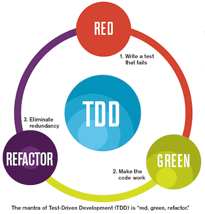

name: inverse layout: true class: inverse --- layout: false background-image: url(img/title-screen-background.png) background-size: contain background-repeat: no-repeat background-position: bottom class: center top # TDD with OOP workshop --- ##\#whoami In IT since 2006, in Java since 2014 Practice TDD since then In Vattenfall since 2016 TODO: solution architect? Currently developer and solution architect in eMobility From time to time speaker at community events and conferences --- ##\#whoareyou Introduction round, let's share our.... Name Occupation Experience TDD & OOP familiarity Expectations --- ##Organization/contract We are not in school Lunch break Coffee breaks Let's treat breaks' endings strictly Learning/performing mode --- ##Agenda 1. TDD - basics - two exercises - test doubles - test approaches - integration and unit tests - tests as design tool 2. OOP - basics - SOLID - Cohesion and coupling - exercises 3. Bigger (most probably vending machine) *kata* --- ##TDD What is it about? Have you tried it? Are you using it? Is it hard? Is it beneficial? --- ##Feedback loops How fast do you want to know that software is working? How fast is *fast*? Automatic tests for the rescue, but they must be *fast* Long feedback loops kills focus Core of eXtreme Programming and Agile Software Development --- ##Feedback loops --- ##Testing What good test should do? What features good test has? What would you expect from good tests? --- ##Test Driven Development  --- ##RED Phase Write a test for new behaviour that is failing It might even not compile, and that's OK! --- ##GREEN Phase Make test compile if it is required Make test pass --- ##REFACTOR Phase Remove duplications Change code structure Introduce patterns (but no new behaviour!) Both test and production code might be refactor, but not in parallel THE MOST UNDERRATED PART OF TDD --- ##Test Driven Development You are not allowed to write any production code unless it is to make a failing unit test pass. You are not allowed to write any more of a unit test than is sufficient to fail; and compilation failures are failures. You are not allowed to write any more production code than is sufficient to pass the one failing unit test. --- ##Why to start from test? Specify what you want first, than how Focus on behaviour Enforces small steps There is no excuse like "we will test later" --- ##Non-Test Driven Development Are you sure, that - your solution works? - you have not broken anything while going step-by-step? - all cases are probably tested? If so, how can you prove it? --- ##Test structure _Given_ Test setup - initial conditions _When_ Behaviour under test _Then_ Verification of behaviour, assertion This approach came from *BDD* - Behaviour Driven Development --- ##Test Driven Development Exercise: String calculator kata --- ##What have we learned so far? TDD loop Start from test Start from assertion Step by step --- ##Qualities of good tests Minimize programmer waiting. Run reliably. Predict deployability. Respond to behavior changes. Not respond to structure changes. Be cheap to write. Be cheap to read. Be cheap to change. --- ##FIRST Fast Isolated/independent Repeatable Self-validating Thorough/Timely --- ##TDD benefits Enforces slice, by slice, step by step approach Safety and comfort Drives development Documentation --- ##Where TDD might not help? HTML rendering UI Complex DB queries Performance Security --- ##Tools Spock Framework JUnit, plenty of assertions tools e.g. AssertJ --- ##Let's have a break --- ##Let's implement something less idealistic How about VOD PPV service? --- ##Step 1 We seem to be missing something! --- ##Types of tests Unit Integration --- ##Unit tests What is a unit? A class? A method? Testing private methods? A cluster of objects? A behaviour? --- ##Integration tests I/O integration What I/O is? --- ##Test pyramid <img src="../images/test-pyramid.png" width="640"> --- ##Unit vs integration test Which test type should we use when? --- ##Unit vs integration test Unit - business logic (business related if's) - as much as possible Integration - processes - happy/critical paths --- ##Testing approaches Black box White box --- ##Blackbox testing Focused on behaviour Couples with behaviour (test changes, when behaviour changes) Ignores implementation details --- ##Whitebox testing Assumes knowledge of implementation details Couples with implementation (test changes, when implementation changes) --- ##Testing approaches pros/cons Black box White box What do you think? --- ##Step 2 Also some insight needed here --- ##Test doubles Simplicistic implementation Behaviour is important --- ##Test doubles Dummy Fake Stub Spy Mock --- ##Dummy Passed around but never actually used Used to fill parameter lists We don't care about input, output, interaction TODO: give examples We care about presence Avoidance of Null Pointer Exception --- ##Fake Working implementations Not suitable for production Map, HashMap, Collection etc. used as in-memory DB --- ##Stub Provide predefined answers to calls made during the test Input is not important --- ##Spy Interaction is checked Input parameters are verified One form of this might be an email service that records how many messages it was sent --- ##Mocks Specification of the calls they are expected to receive Can throw an exception if they receive a call they don't expect Checked during verification to ensure they got all the calls they were expecting --- ##Dummy Passed around but never actually used Used to fill parameter lists Avoidance of Null Pointer Exception --- ## Test Doubles Traps Too much mocks Mocks duplicating real behaviour Mocks returning mocks Mocks returning mocks returning mocks... TODO: example --- ## Test Doubles - when and how? Use at module boundaries Use fake for custom DB implementation to speed up testing --- ##Test Doubles tools Spock Framework Mockito for JUnit --- ##Step 6 Bugfixing and TDD Add test reproducing the bug Fix it --- ##TDD and existing code Refactoring Cover with tests Refactor safely and without stress --- ##TDD as design tool Is TDD design tool itself? Navigates through designing Enforces (re)design step Doesn't tell *how* to design --- ##What have we learned here? Unit and integration tests Test doubles --- ##Let's have a break --- ##Object Oriented Programming (OOP) Object Oriented system - web of communicating object OOP is about behaviour, not data --- ##Object Oriented Programming (OOP) Core concepts: Encapsulation Polymorphism Inheritance --- ##OOP - encapsulation/information hiding Realised with _access modifiers_ Hidden implementation details Scalable at multiple levels Is class with getters/setters encapsulated? --- ##OOP - tell don't ask (Demeter law) You may call methods of objects that are: 1. Passed as arguments 2. Created locally 3. Instance variables 4. Globals TODO: samples --- ##OOP - encapsulation at scale Modules and microservices But what about module internals? TODO: sample of Java default access --- ##OOP - inheritance Currently considered as bad practice Inherited fields are visible -> no encapsulation/hiding Base class is tightly coupled with its descendant Prefer composition over inheritance TODO: broken encapsulation, high coupling, code sample --- ##OOP - polymorphism Interface and implementation(naming) Strategy/state design pattern Naming conventions? --- ##OOP in practice What does Object Oriented language mean? Is Java an OO language? If no, what should be changed? Is '''class''' keyword enough to be OO? --- ##OOP in practice - heuristics SOLID Cohesion - coupling --- ##SOLID SRP OCP LSP ISP DIP TODO: examples --- ##SRP Single Responsibility Principle How do you understand it? --- ##SRP Single Responsibility Principle "Do one thing" "One reason to change" Sounds quite academic Do even authors understand it? --- ##OCP Open Closed Principle How do you understand it? --- ##OCP Open Closed Principle "Open for extensions, closed for modification" What design patterns styles support it? DI IOC Interfaces Events Higher order functions --- ##LSP Substitution of interfaces' implementation must be possible How do you understand it? --- ##LSP Substitution of interfaces' implementation must be possible Focus on behaviour How code must be tested to ensure it? --- ##ISP Interface segregation principle How do you understand it? --- ##ISP Interface segregation principle API width --- ##DIP Client should depend on abstraction not implementation How do you understand it? --- ##DIP Client should depend on abstraction not implementation Should everything have interface? --- ##Cohesion and coupling WTF are they? --- ##Cohesion _Degree to which the elements inside a module belong together_ When class' behaviours implemented in methods, have much in common cohesion is increased Ideally class has one method which operates on all class' fields --- ##Increasing cohesion Extract/split classes Separate logic from I/O on class/package level Build packages on functionalities not layers --- ##Benefits of high cohesion Reduced complexity High maintainability, easier refactoring Good readability TODO: sample --- ##Coupling Changing in one place needs change in an other place as well TODO: example --- ##Decoupling Process of reducing coupling: Same class Inheritance Composition/Dependency injection Events --- ##High cohesion - loose coupling Probably most important design heuristic(s) in IT development OOP DDD Modules Microservices --- ##High cohesion low coupling TODO: sample --- ##TDD and OOP - testing and design An *Unit* can be quite flexible Java has default access - so called package private How about this: public facade serving as an API --- ##TDD and design Does TDD itself lead to good design? Helps a lot, but... At least some overview design might be useful Bad testability usually is a marker of bad design --- ##Vending machine kata ---